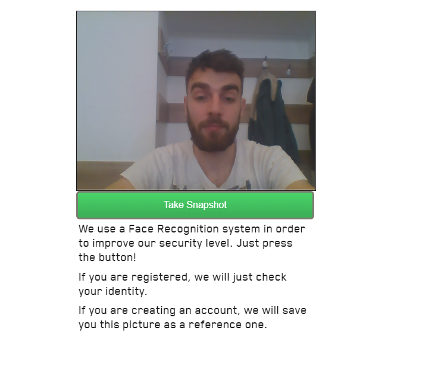

The first time a users comes in contact with DAVE, they see the authentication page. From here, they
can create an accout, log in with their current account or recover their password.
After the user creates an account, he will be taken to the face authentication screen. If it is the
first time
he is authenticating into our platform, his face will be registered and used for later authentications.
If it's not
the first time, an already existing face will be compared to the face associated with the user. If the
faces match,
the user will be redirected to the home page else he will be redirected back to the authentication
page.

2. Home
After the authentication step, the user will find himself on the home page. On the home page, the user
can
see the F.A.Q. section or the contact section together with a description of the service we provide. He
can also
use the header, from any page not only from the home page, to navigate to any page available on the
platform.
3. Keys page
The user can navigate to the keys page by using the "GO TO MY KEYS" button from the home page, or by
using the
"KEYS" button on the header. From here he can create a key that will be used to secure forms from his
site. By pressing
on "GENERATE NEW KEY" and filling the presented form, a new key will be generated. If the user chooses
not to save the private key
on our platform then a modal will appear one time only, showing the private key to the user. After
that, in order to access forms
encrypted with this key, he will need this private key.
4. Data page
User can also navigate from the header to the data visualization page. If the key he chose is private,
then a pop up will
appear asking the user for the private key. If the key entered is valid, the data visualization page
will be rendered with data
submited from the user forms.